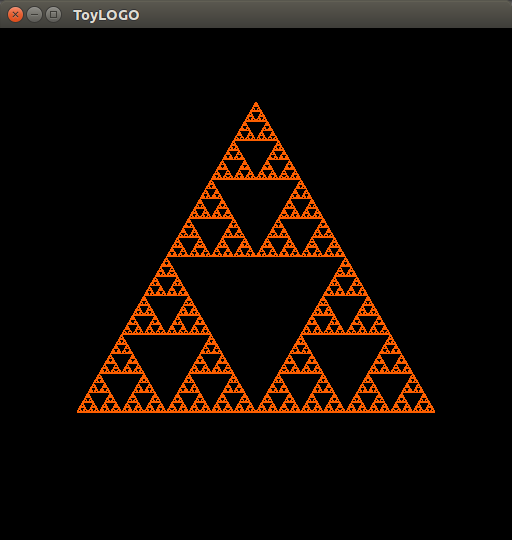
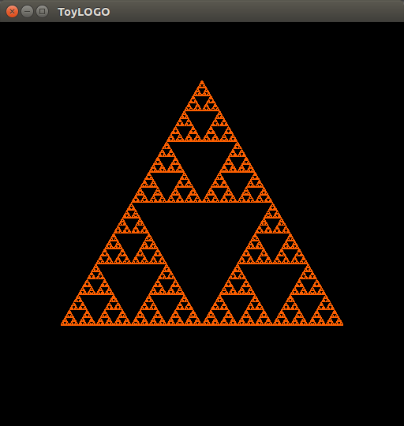
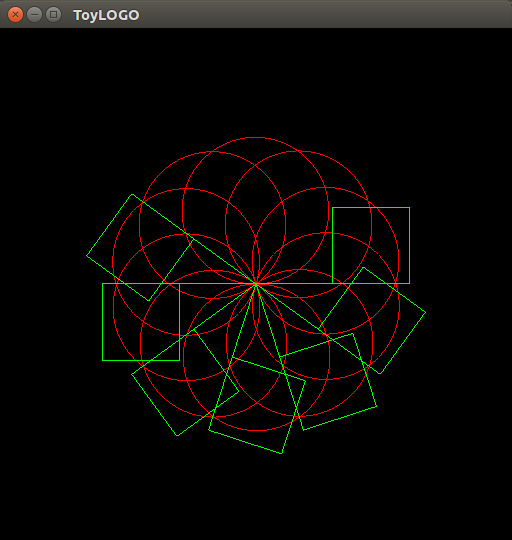

CS475 Assignment 1
LOGO Programming Lanugage
Logo is an educational programming language, designed in 1967 by Daniel G. Bobrow, Wally Feurzeig, Seymour Papert and Cynthia Solomon. Today the language is remembered mainly for its use of "turtle graphics", in which commands for movement and drawing produced line graphics either on screen or with a small robot called a "turtle".
This is Assignment focuses on implementing some of LOGO's functionality using OpenGL Graphics. Following is the list of operations that can be done with the assignment.
| Operation | Command syntax | Description |
|---|---|---|
| reset | RESET | Reset the turtle position and orientation |
| clear | CLS | Clear the screen |
| set_pos | Set the position of the turtle | |
| set_dir | Set the direction of the turtle | |
| set_col | COL(r, g, b) | Set the color of the pen |
| set_bgcol | BGCOL(r, g, b) | Set the Background Color |
| scale | SCALE s | Scale the current canvas by s |
| turn_left | L a | |
| turn_right | R a | |
| forward | F x | |
| backward | B x | |
| forward_move | MF x | Move forward without drawing |
| backward_move | MB x | Move backward withou drawing |
| repeat | REPEAT r | Repeat the next set of commands r times. Scope bounded by a corresponding ENDREP |
| exec | execute the commands in the list | |
| pause | PAUSE t | Pause the simulation for time t | BEGIN / END | Begin / End the turtle program |
Screenshots
Following is an example of sierpinki fractal


Following is a screenshot of an animation created with logo

LOGO Code
BEGIN
COL 1 0 0
REPEAT 10
REPEAT 360
F 0.005
R 1
ENDREP
R 36
PAUSE 100000
ENDREP
COL 0 1 0
REPEAT 10
F 0.3
L 90
F 0.3
R 90
F 0.3
R 90
F 0.3
R 90
F 0.6
R 180
R 36
PAUSE 100000
ENDREP
END